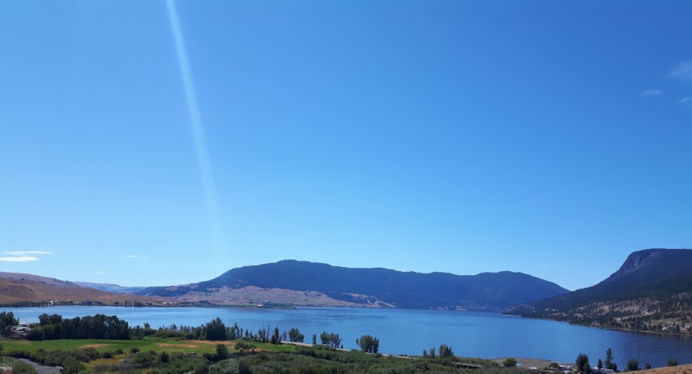

First Nation Bands and Tribal Councils have undertaken projects, research, forestry referrals, environmental impact studies, environmental monitoring for projects, traditional land use studies, cultural research, protecting our historical sites, these are some of the many things that first nation people do to protect the Land and Tmixw.
Upper Nicola Band - Syilx Nation
